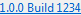

Install Wizard


Install Wizard |
|
The install wizard is the basis for Oomph's bootstrap-triggered, automated installation and provisioning process.
The wizards's footer contains the following:
 |
Brings up this help. |
 |
Navigates to the previous page. |
 |
Navigates to the next page. |
 |
Completes the wizard, performing any final actions. |
 |
Closes the wizard, taking no further action. |
| Brings up the equivalent of Eclipse's Window → Preferences… → General → Network Connections preferences. Configuration of the network proxies is a necessary first step for users working in an environment behind a fire wall; none of Oomph's Internet-hosed resources will be accessible without that configuration. All the configured network settings will be propagated to the installed product. | |
| Brings up the equivalent of Eclipse's Window → Preferences… → General → Network Connections → SSH2 preferences. Confirming the SSH2 settings during initial installation is a good idea when using any technologies that are based on SSH access, for example, if you plan to clone Git projects via public-key encryption. All the configured SSH2 settings will be propagated to the installed product. | |
| Updates the installer itself to the last Internet-hosted version. The wizard always checks whether updates are available. If so, this button is animated, otherwise it's disabled. | |
|  | Indicates which version, along with which build of that version, you're currently using. This is particularly useful when reporting problems. It acts as a link that brings up the about dialog. |
The following downloads are available for this Eclipse RCP application.
This download can be "installed" just like Eclipse itself.